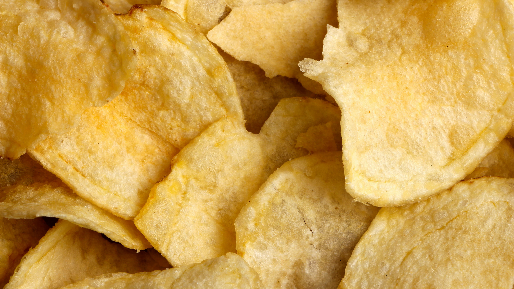

「わさビーフ」生産再開！
ホルムズ海峡封鎖で11日間の停止
——本日3月23日より供給スタート

「わさビーフの生産体制が整いました」——本日3月23日、山芳製菓が公式サイトとXでこう報告した。ホルムズ海峡封鎖による重油不足で11日間にわたって続いた生産停止が、ついに終わりを迎えた。
山芳製菓の「わさビーフ」は1987年の発売以来、わさびのツンとした刺激とビーフの旨みで長年愛され続けてきた国民的ポテトチップスだ。そのわさビーフが突如として店頭から消えたのは今月のこと。背景にあったのは、遠く離れた中東の情勢だった。
3月12日、山芳製菓は兵庫県朝来市の関西工場の操業を一時停止すると発表した。原因はホルムズ海峡の事実上の封鎖により、工場のボイラーを動かすための重油が調達できなくなったことだ。ポテトチップスを揚げる食用油はボイラーで温める仕組みになっており、週3万リットルを消費する重油がなければ生産ラインそのものが動かない。わさビーフを含む6製品の出荷が停止し、16日にはオンラインショップも休業に追い込まれた。
3月12日
工場操業を一時停止。重油調達が困難になったと発表。
3月16日
オンラインショップ・直売所も休業。新規注文の受付を停止。
3月17日
わさビーフを含む6製品の生産停止を正式発表。再開のめど立たずと報告。
3月23日
重油の供給体制が整い、工場の操業を再開。順次商品の供給も再開へ。🎉
生産停止から11日。山芳製菓は公式Xで「わさビーフの生産体制が整いました。これまで温かい応援のお言葉をたくさんいただき、心より感謝申し上げます」と報告し、ファンへの感謝を伝えた。停止期間中、SNS上では「早く帰ってきて」「スーパーで見かけるたびに買いだめしてた」などの声が相次いでいた。
⚠️ 注意点
供給再開後もしばらくの間は、一部商品で出荷量の調整が発生する可能性があります。店頭に並ぶまでには少し時間がかかる場合も。完全な安定供給には引き続き時間がかかる見通しです。
今回の一件は、身近なお菓子が中東の情勢に左右されるという意外な事実を多くの人に気づかせた出来事でもあった。それでも11日後に届いた「再開」の知らせは、ファンにとって今日一番のポジティブニュースになったに違いない。